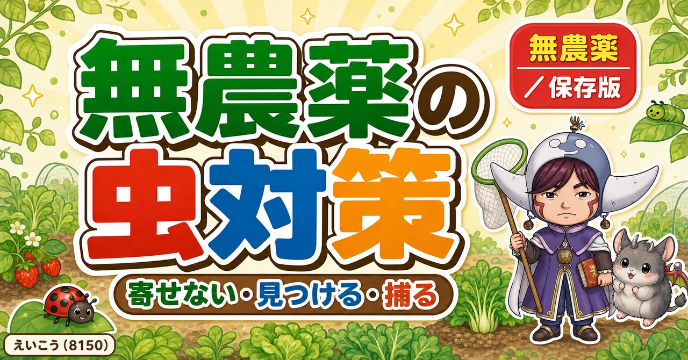
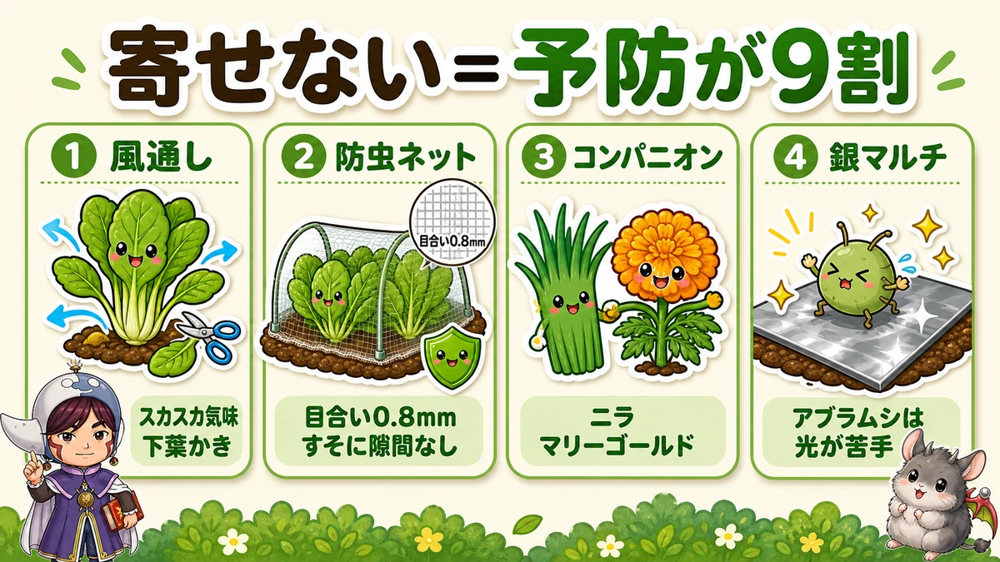
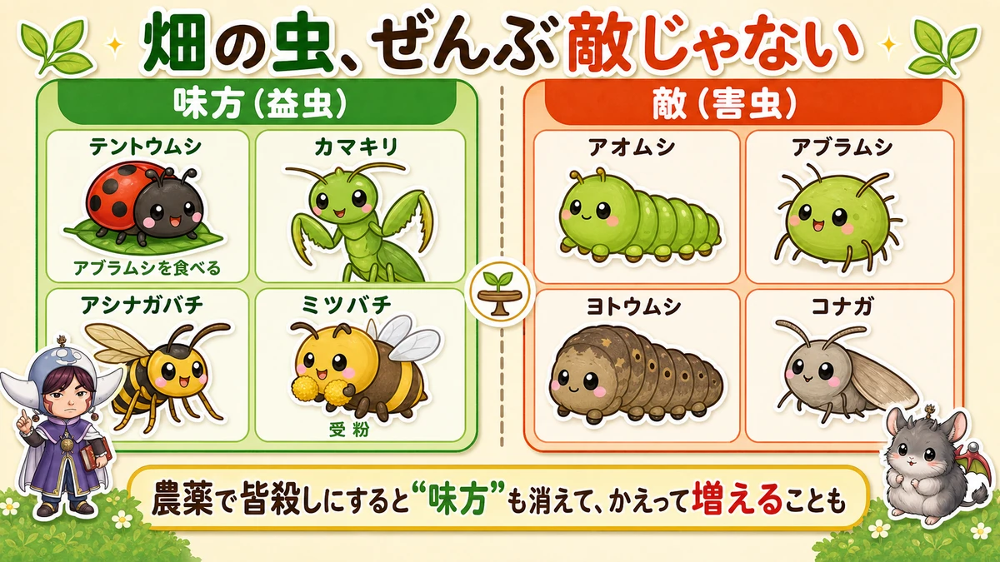
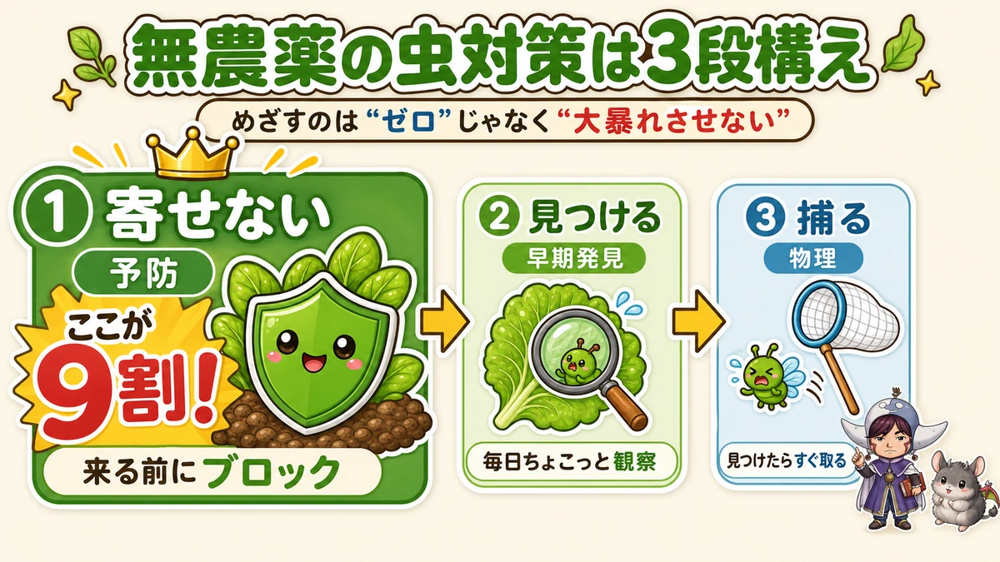

農薬に頼らない虫対策の調べ方｜葉の穴・ネット・天敵から次の手を選ぶ

📖 この記事の目次
この記事で分かること
- 虫対策は、植える前に入り口をふさぎ、育てながら食害を確かめ、見つけた虫へ対応する順で進めます。
- 葉の表だけでは見落とします。裏側、中心の新芽、株元、果実を分けて調べると、探す場所が絞れます。
- 防虫ネットは設置して終わりではありません。作業後のすき間と、生長して葉が触れた場所を確認します。
- 虫の名前だけで取り除く対象を決めず、何を食べているかも見ます。アブラムシを食べる虫は助っ人です。
- 見回りの間隔、ネットの撤去、周囲の草の管理には異なる説明があります。野菜と季節の条件を合わせて使います。
- 手作りの液体は、名前の印象だけで効果や安全性を決めません。このページでは、確認できる物理的な対策を中心に選べます。
葉に穴があると、「何かまかなあかん？」と焦りがちです。でも、最初の仕事は虫の居場所を確かめること。穴があっても今は虫がいない場合があり、反対に、目立つ穴がなくても中心の芽に入り込んでいる場合があります。
このページは、虫対策を思い出したいときの調べ物用です。これから植えるみなさんは『作業の手順』へ。いま葉が傷んでいるなら『失敗の見分け方』へ進んでください。虫の名前を全部覚える必要はありません。『どこが変わった？』『そこには何がいる？』から始めれば大丈夫です☺️
目指すのは、目に入った虫を片っ端から消すことではなく、野菜を傷める被害を早く見つけて抑えることです。畑にいる虫の中には、ほかの虫を食べるものもいます。野菜を見る時間と、虫の行動を見る時間を少しずつ作ると、取り除く作業にも理由がついてきます。
早見：農薬に頼らない虫対策（ひと目で分かる数字）
予定を立てるための目安
- 開始の目安：大根の直まきでは、発芽を待たず種まき直後から覆う方法があります。白菜・キャベツ・ブロッコリーなどの苗では、植え終わった時点でネットを設置します。
- 枝豆の開始時期：初期から覆う説明に限らず、害虫が増えるころや莢がつく時期から覆う方法があります。アブラナ科の段取りを、すべての野菜へ一律に移しません。
- 見回りの間隔：ブロッコリーの虫点検には毎日を勧める説明、大根・白菜のネット内点検には約2週間に1回という説明があります。毎日〜2週間という幅は、自由に選べる共通基準ではなく、条件の異なる方法の幅です。
- 時間帯：ウリハムシなどを捕まえる作業では、涼しい早朝が候補です。ヨトウムシが疑わしいときは、昼の葉だけで終えず、株元の土も見ます。
- 秋の撤去：10月中旬に外す目安と、そのころも暖かく被害が増えた比較例があります。白菜では収穫まで覆う方法、霜の時期に合わせて緩めたり外したりする方法があります。
- 春の切り替え：タマネギでは、平均気温10℃以上の日が増えることをネット撤去の目安にする説明があります。これはタマネギの天敵活用の場面で、すべての野菜の境界温度ではありません。
- ネットの長さ：設置例では、うねの長さに両端各60cm、合計120cmを加えています。3mのうねなら4.2mという計算です。端を地面まで下ろして閉じる余白を含みます。
- ネットの幅：うね幅だけでは決まりません。トンネルの高さと、両側の裾を地面まで下ろす分が必要です。背の高い株ほど余裕を取ります。
- 土中を探す深さ：ヨトウムシの幼虫や蛹を探す例には、地表から約10cmの範囲があります。栽培中の根を傷めるまで掘る指示ではなく、片づけ後の点検とも分けます。
- 株間・元肥・収穫日数・連作の間隔：虫対策全体で共通する数字はありません。育てる野菜の栽培計画に合わせ、葉裏へ手が届く通路や作業の余裕を確保します。
ネット選びで先に見ること
網の穴の細かさは『目合い』と呼びます。大きな成虫を入りにくくすることと、小さな虫を入りにくくすることでは、必要な条件が違います。細かい網は選択肢ですが、風や光の通り方にも影響します。
材料の説明には約1mmの網と、さらに細かな網が出てきます。ただし、細かな方の単位には自動字幕の不確かな表記があるため、ここで虫別の規格表にはしません。購入時は商品の目合い、対象の虫、使う季節を実物の表示で確かめてください。『防虫』と書いてあるだけで、どの虫も防げると考えないようにします。
- 葉を食べる蝶や蛾の対策：まず、成虫が入るすき間を減らします。
- 小さな吸汁性の虫の対策：目合いと商品表示を確認し、すでに中にいる虫も調べます。
- 葉がネットに押されている状態：網を買い足す前に、骨組みの高さと幅を見直します。
- 暑さや蒸れが気になる状態：閉じることだけを優先せず、株と網の距離、内部の様子も確認します。
見つけた場所から、次の確認先へ
- 葉に穴：その葉の裏側、重なる葉、近くの糞を探します。
- 穴と糞はあるのに虫が見えない：株元や浅い土の陰も候補にします。
- 新芽だけが傷む：中心をそっと開き、小さな幼虫がいないか見ます。
- 葉裏に小さな虫が集まる：アブラムシなどを疑い、周囲にそれを食べる虫がいないかも見ます。
- 葉がかすれ、裏側に細かな糸がある：ハダニなどの可能性を考え、穴を開ける幼虫とは分けます。
- 果実に穴：穴の周りだけでなく中の幼虫も確認し、隣の果実を点検します。
- 苗が根元で倒れる：風の影響だけで決めず、茎をかじった跡と土中の虫を調べます。
この早見は、虫の種類を確定する図鑑ではありません。同じような傷を作る虫もいます。みなさんの野菜で実際に見えたものを、次の手順へつなげるための入口です。
作業の手順（時期の順）
植える前：覆う範囲と、開ける場所を決める
- 育てる野菜、植える日、今いる虫を確認します。アブラナ科の柔らかい苗を守るのか、枝豆の莢を守るのかで、覆う時期は変わります。
- うねの長さと、生長後の葉が広がる範囲を見ます。今の小さな苗の幅だけでトンネルを決めないようにします。
- ネットを開けて作業できる側を確保します。通路から届かない葉が増えると、見回りがざっと眺めるだけになりやすいです。
- 使用する網の破れと、地面まで届く裾の長さを調べます。骨組みと網を用意してから、種まきや植え付けへ進みます。
- 土づくりの途中で幼虫が見つかったら、姿と場所を確認します。根を食べる場面と、枯れたものを分解する場面を同じに扱いません。
『苗を植えてから、明日にでもネットを買おう』だと、空いている時間ができます。植える道具と覆う道具を一組にしておくと、その日のうちに守り始められます。派手さはないけれど、こういう段取りが後の虫探しをラクにしてくれるんですよね。
苗を持ち込むとき：葉裏と中心を調べる
- 苗の表面を見て、大きな食害がないか確認します。
- 葉を一枚ずつ無理のない範囲で持ち上げ、裏側の卵や小さな幼虫を探します。
- 中心の新しい葉を見ます。外葉がきれいでも、真ん中に傷や虫がないかを確かめます。
- 害虫と確認できたものは取り除きます。名前が分からない虫まで、勢いで全部落とさないようにします。
- 植え付け後にも軽く見直してから、ネットを閉じます。
網は、外から入る虫への壁です。苗について来た卵まで消してくれる道具ではありません。すでに虫がいるまま覆えば、天敵が入りにくい空間に虫を残すことにもなります。ネットを張る前の確認は、仕上げのひと手間というより、覆う作業の一部です。
種まき・植え付け当日：すき間を残さず設置する
- 野菜の大きさに合う骨組みを立て、葉の上と横に空間を作ります。
- 網を広げ、両側の裾が地面へ届くことを確かめます。
- トンネルの両端を閉じます。中央がきれいに張れていても、端が開いていると侵入口になります。
- 裾を土で押さえるなど、地面とのすき間をふさぎます。固定具のある点だけでなく、その間も見ます。
- 周囲を一周し、たるみ、破れ、浮いた場所を点検します。
設置例では、長さ3mのうねに4.2mの網を使い、両端の余りを固定に回しています。ただ、トンネルの形が違えば必要な余白も変わります。切る前に仮に掛けてみて、両端と裾が届くかを見ると判断しやすいです。
『上からは入れへんやろ』と思っても、裾のわずかな開きは別です。網全体を見る目と、地面に沿って見る目を使い分けてください。閉じたつもりを、最後の一周で実物確認します。

育ち始め：毎回同じ順番で観察する
- 網の外側から、株全体の大きさと葉の穴を見ます。
- 作業する分だけ開け、外側の葉から裏側へ確認します。
- 中心の葉と、新芽が出る部分を調べます。
- 下の葉や地面に、糞らしいものが落ちていないか見ます。
- 見つけた虫に対応し、ほかの株も同じ場所を確認します。
- 網を戻して両端と裾を閉じ、開ける前と同じ状態に整えます。
虫探しは、毎回あちこち思いつきで見るより、『外葉→葉裏→中心→足元』と順番を決める方が見落としを減らせます。虫の数が多いか少ないかだけでなく、昨日まで無事だった中心に傷が出ていないかも見たいところです。
見回りの頻度には、毎日という説明と約2週間おきという説明があります。すでに食害が進んでいる株を、間隔の長い方に合わせて放置する話ではありません。新しい穴が増えたら、次の予定日を待たずに確認します。虫の多い時期、小さい苗、中心に傷がある株は、特に早く変化を拾いたい対象です。
卵や幼虫を見つけた：野菜を傷めず取り除く
- 虫が葉を食べているか、ほかの虫を食べているかを見ます。
- 食害する幼虫が見つかったら、小さいうちに取り除きます。
- 小さな虫が少数集まっている場合は、柔らかい刷毛などで落とす方法があります。葉を支え、こすりすぎないようにします。
- 払い落とした虫をその場で見失わず、再び株へ戻らないように処理します。
- 中心の柔らかい部分は、強くつまんだり何度もこすったりせず、丁寧に探します。
- 翌回も同じ場所を見て、取り残しと新しい発生を確認します。
虫を取ろうとして葉を破ってしまうと、守りたい野菜まで傷みます。特に苗の中心は、新しい葉が出てくる場所です。『虫を落とす力』と『植物にかけてよい力』は同じではありません。捕まえにくいときほど、急がず姿勢を整えます。
手で触るのが苦手なら、道具を使う方法から始めても大丈夫。大切なのは、虫がいる場所を見てから対応することです。葉全体を手当たり次第にこするより、見つけた場所へ絞った方が作業も小さく済みます。
糞があるのに虫が見えない：探す場所を下へ移す
- 糞らしいものがある葉と、その上の葉を確認します。
- 葉の重なりや裏側に虫がいないか調べます。
- 葉で見つからなければ、株元の陰や浅い土へ目を移します。
- 根を傷めない範囲で表面をそっと確認します。株の近くを大きく掘り返しません。
- 見つからなかった場合は、食害の場所を覚え、別の時間帯にも同じ株を見ます。
ヨトウムシが疑わしい場面では、昼間に土へ隠れている可能性があります。昼の葉にいないからといって、被害が終わったとは言えません。ただし、糞の色や形だけで種類を決めないことも大切です。糞は『この近くを探そう』の合図として使います。
約10cmの深さを調べる例もありますが、収穫後の土の点検と、根が育っている途中の株元では作業の許容範囲が違います。栽培中は根を守りながら確認し、片づけ後には土中を改めて調べる、と分けてください。
株が大きくなった：網と葉の距離を戻す
- 葉の先端だけでなく、横へ張り出した葉も網に触れていないか見ます。
- 接触して折れ曲がった葉の裏側に、卵や虫がいないか確認します。
- 骨組みの高さや幅を調整し、葉が自然に広がれる空間を作ります。
- 網を動かしたあと、裾と両端の閉じ方をやり直します。
- 空間を広げても蒸れが続く場合は、野菜と季節に合う覆い方を検討します。
網を上げれば上は空きますが、今度は裾が浮くことがあります。上の余裕と下の閉じ方を、セットで見直してください。白菜のように外へ葉が大きく広がる野菜では、苗のころにぴったりだったトンネルが途中から狭くなることがあります。
広げる、緩める、外す、という選択は同じ効果ではありません。すき間を作れば通気は変わりますが、虫が入る可能性も増えます。まず骨組みで空間を作れるかを確認し、撤去については後の『説明が分かれていること』も読んでください。
実がついた：果実と莢を確認する
- トマトやピーマンなどは、葉だけでなく果実の穴と糞を探します。
- 穴のある果実は早めに取り除き、中に幼虫が残っていないか確認します。
- 取り除いた果実を株元へ置きっぱなしにせず、幼虫が別の実へ移る可能性を考えます。
- 同じ株と隣の株で、まだ小さい果実も調べます。
- 枝豆では莢と、その周囲のカメムシを確認します。覆う時期は、栽培の段階に合わせます。
外から見える穴は小さくても、内部が食べられている場合があります。果実を摘んだことと、そこにいた虫を取り除けたことを分けて確認すると、作業の取りこぼしを減らせます。ここは『実を一個外して終わり』になりやすいところです。
収穫後：次へ持ち越す場所を見直す
- 残った株や葉に、虫が残っていないか見ます。
- 土づくりをする段階で、地表付近の幼虫や蛹を調べます。
- 周囲の草を見て、害虫が潜む場所と、天敵が活動する場所を区別します。
- 網の破れと汚れ、足りなかった幅や長さを確認します。
- 次の植え付け前に、修理や設置方法の変更を済ませます。
記録するなら『虫が多かった』だけより、『白菜の中心』『網の端が浮いた後』『果実に穴』のように、場所と状況を短く残すと次に役立ちます。虫の名前が分からなくても、何を守るためにどこを変えるかは考えられます。
失敗の見分け方（症状→原因→やること）
ネットを掛けたのに、葉の穴が増える
- 症状：覆っている株に新しい穴ができ、食べられる範囲が広がります。
- 考えられる原因：設置前から卵や幼虫がいた、裾や端にすき間がある、作業中に成虫が入った、網が破れている、といった可能性があります。
- やること：中の葉裏と中心を点検して虫へ対応し、その後に外周の閉じ方を直します。
網の外だけ直しても、中に残った虫は減りません。逆に、中の虫を取っても侵入口が残ればまた入ります。『中の確認』と『外の修理』を続けて行うと、どちらか片方で終えるのを防げます。
網があるから虫の原因ではない、と決めつけないようにします。最後に開けたのはいつか、風で浮いた場所がなかったかも思い出してみてください。原因を一つに決められなくても、見つかったすき間を閉じる作業は進められます。
表面は無事なのに、葉裏へ小さな虫が集まる
- 症状：葉の裏や新芽の周囲に、小さな虫がまとまってつきます。
- 考えられる原因：アブラムシなどの吸汁性の虫が増えている可能性があります。網の穴を通った場合も、覆う前からいた場合も考えます。
- やること：少数の段階で柔らかい刷毛などを使い、葉を傷めず取り除きます。取り残しと、同じ株のほかの葉も確認します。
葉の表がきれいだと、つい合格にしたくなります。でも、裏側へひっくり返すと状況が変わるんですよね。新芽の近くは細かい場所が多いので、急いで一度見ただけでは見落とす場合があります。
同じ場所にテントウムシなどがいるときは、アブラムシを食べているかも見ます。助っ人まで一緒に払い落とさないように、作業する範囲を絞ってください。天敵がいることだけで被害が止まる保証はないため、野菜の傷みの進み方も続けて確認します。
中心の葉が傷み、新しい葉が出にくい
- 症状：外葉より、株の真ん中の柔らかい部分が強く傷みます。
- 考えられる原因：中心へ入り込む幼虫の食害などが候補です。虫の種類は、中心の傷だけでは確定できません。
- やること：中心をそっと見て、小さな幼虫や食べた跡を探します。無理に指でこじ開けず、残った新芽を守ります。
外葉が何枚か残っていても、これから葉を作る部分が失われていれば、同じ見込みで待てないことがあります。白菜では、外側の穴の数だけでなく、中心が生きているかが大切です。
虫を取り除いた後も、新しい葉が出ているかを確認します。害虫を除去したことと、株の生長が回復したことは別です。肥料を追加すれば中心が戻る、と考えず、株に残った部分を見て次の利用を判断してください。
穴と糞はあるが、昼間は虫が見つからない
- 症状：食べられた葉や糞らしいものがあるのに、葉の上に幼虫がいません。
- 考えられる原因：葉の重なりに隠れている、昼に土へ潜る虫がいる、すでに移動した、といった可能性があります。
- やること：葉裏、株元、浅い土を順に確認し、必要なら時間帯を変えて見ます。
『いない』には、探した場所にいないという意味と、株の周囲からいなくなったという意味があります。一回の点検で分かるのは、前の方だけかもしれません。新しい食害が続くかを合わせて見ると、次に探す必要があるか判断しやすいです。
糞らしいものを見つけたら、その真上だけに虫がいると決めず、近くの葉へ範囲を広げます。土と似た色の幼虫や蛹は見つけにくいので、収穫後の土づくりのときにも、ゆっくり確認する意味があります。
苗が倒れ、根元にかじった跡がある
- 症状：苗が倒れたり茎が折れたりして、地面に近い部分へ傷があります。
- 考えられる原因：風や作業の傷に加え、根元を食べる幼虫の可能性があります。
- やること：折れた部分を見て、周辺の土中を根に無理のない範囲で確認します。
『昨日風が強かったから』だけで終えると、食害の跡を見落とす場合があります。茎が傷んだ場所を先に見てから、土の中を探す順にしてください。名前を確定できなくても、茎をかじる虫を実際に見つければ、対応の対象ははっきりします。
しおれるだけの苗も、虫が原因とは限りません。根元の傷も虫も見つからなければ、水分や根の状態の確認へ戻ります。葉が元気をなくしたという一つの症状から、土中害虫と即決しないようにします。
小さな緑の幼虫を見落とし、食害が続く
- 症状：大きなアオムシは見つからないのに、葉裏で食害が進みます。
- 考えられる原因：小さな幼虫や、葉の色に近い虫を見落としている可能性があります。コナガなども候補ですが、大きさだけでは種類を決めません。
- やること：『目立つ芋虫』を探すつもりを一度外し、葉裏と細かな傷の近くを丁寧に見ます。
虫のイメージが一つに固まると、その姿と違うものが視界から抜けます。大きな幼虫を探す目、小さな卵や幼虫を探す目を分けると、同じ葉でも見えるものが変わります。
ウリ科の苗の葉が食べられる
- 症状：キュウリなどの葉に食害があり、小さな苗ほど影響が大きく見えます。
- 考えられる原因：ウリハムシなど葉を食べる虫が候補です。葉や花にいる成虫を確認します。
- やること：幼苗を覆って守る方法を検討し、涼しい早朝に虫がいないか見ます。見つかった成虫を取り除きます。
同じ一枚の葉が失われても、小苗と葉が十分増えた株では、残る葉の量が違います。成長した株で耐えられた方法を、植えたばかりの苗へそのまま使わないことが大切です。『この野菜は虫に強い』という大きなくくりより、いまの株の段階を見ます。
ナス科の葉が食べられ、丸い甲虫がいる
- 症状：ナスなどの葉に食害があり、テントウムシに似た虫がついています。
- 考えられる原因：葉を食べるテントウムシダマシの仲間などが候補です。アブラムシを食べるテントウムシとの混同に注意します。
- やること：葉の傷と虫の行動を合わせて確認し、食害する成虫・幼虫へ対応します。
丸い形と斑点だけで『味方や！』とも『害虫や！』とも決めません。斑点の数だけで全種類を分ける一覧は、この材料からは作れません。虫が何を食べているか、どんな葉にいるかが、次の確認の手掛かりになります。

葉がかすれ、裏側に細かな糸が見える
- 症状：葉の色が抜けたようになり、裏側に光る部分や細い糸が見えます。
- 考えられる原因：ハダニなどが候補です。大きな穴を開ける虫とは別に考えます。
- やること：葉裏をよく調べ、水で流す方法を検討します。小苗や弱った葉に強い水を当てないよう、様子を見ながら行います。
粘着の強いテープで何でも取ろうとすると、葉の表面を傷める可能性があります。『小さい虫ならテープ』と一律にせず、葉の丈夫さと虫のいる場所を見ます。虫を減らした後に葉がさらに傷んでいれば、取り方も見直してください。
果実に穴が開き、中に糞がある
- 症状：トマトやピーマンの実へ穴ができ、内部が食べられています。
- 考えられる原因：果実へ入り込む蛾の幼虫などが候補です。果実の穴だけで種名は確定しません。
- やること：被害の実を早めに摘み、中の幼虫を確認して取り除きます。周囲の実も点検します。
実を取って地面へ置くだけでは、生きた幼虫を残す場合があります。摘み取る対象と取り除く虫を、二つとも確認してください。葉がきれいな株でも実に被害が出るので、収穫が近づいたら葉の見回りに果実の点検を加えます。
虫を減らしたのに、前の穴が残っている
- 症状：対応した後も葉が穴だらけに見え、効いていないように感じます。
- 考えられる原因：取り除いた虫の古い食害が残っている可能性があります。葉の欠けた部分は、その場で元に戻りません。
- やること：古い穴の見た目だけで判定せず、新しい傷と新葉への被害が増えているかを見ます。
確認したいのは、葉が新品のようになったかではなく、食害が続いているかです。前回見た場所を写真や短いメモに残すと、増えた部分を比べやすくなります。新しい傷が止まった場合と、新芽まで傷み始めた場合では、次の作業が違います。
説明が分かれていること
点検は毎日か、約2週間に1回か
- Aという説明：ブロッコリーで卵や小さな幼虫を調べる際、できれば毎日見る方法があります。
- Bという説明：防虫ネットで覆った大根や白菜では、約2週間に1回の内部点検を目安にする方法があります。
- どう考えればよいか：同じ作物、同じ季節、同じ被害状況の比較ではありません。ネット内の予防点検と、発生した虫を探す作業を分けます。
数字だけ並べると『たまに見ればいいのか、毎日なのか、どっちやねん』となりますね。でも、守る株の大きさと今の食害で必要な作業は変わります。すでに葉が減っている状態を、予防点検の長い間隔へ合わせないことが大切です。
毎日行けない場合は、まず覆う前の確認と裾の閉じ方を丁寧にします。行ける日の点検は葉の表だけで済ませず、中心と足元まで見る順を決めます。ここにある頻度は、見られない期間の安全を保証する数字ではありません。
白菜のネットは収穫まで残すか、途中で外すか
- Aという説明：暖かい秋に10月中旬で撤去した株は食害が増え、覆いを続けた株はきれいだった比較例があります。白菜を収穫まで覆う方法が示されています。
- Bという説明：大きな葉が網にぶつかると通風が悪くなるため、トンネルを広げ、霜のころに緩めたり外したりする方法があります。
- どう考えればよいか：暖かさと虫の活動、葉と網の距離、内部の蒸れを一緒に見ます。全国で同じ日に外す予定にはしません。
Aの比較は、その年のその株で起きた結果です。毎年、どこでも同じ被害差になるとまでは言えません。Bも、苗を植えた直後からすき間だらけにする方法ではありません。成長後の管理として、どこを変えるかを考える説明です。
まずは広げられるかを確認し、それでも狭い場合に覆い方を選びます。外すなら、外した後の虫点検を予定へ入れてください。網の管理が終わる日と、虫を見る仕事が終わる日は同じではありません。
裾はしっかり閉じるか、通風のために緩めるか
- Aという説明：大根などの侵入防止では、ネットと地面のすき間を土でふさぎます。
- Bという説明：葉が大きくなった白菜では、裾の押さえを緩めて覆いを残す中間の方法があります。
- どう考えればよいか：初期の侵入防止と、大きくなった株の通気調整を分けます。Bには、開いた場所から虫が入るリスクも伴います。
『緩くてもよい』という言葉だけを使うと、Aで防ごうとしていた入り口が戻ってしまいます。通風を取るために何を開けたのか、それで虫の点検をどう変えるかまでを一組で考えてください。
銀色の反射があれば、小さな虫も防げるか
- Aという説明：白菜の植え付けでは、光を反射する糸入りのネットを重視する説明があります。
- Bという説明：反射する糸の入った網を使いつつも、反射による効果の大きさには留保する説明があります。
- どう考えればよいか：網の穴で侵入を制限する働きと、反射で寄りつきにくくする働きを分けます。反射だけで完全に防げるとは扱いません。
商品に反射する部分があっても、裾の開きがそのままなら別の入り口は残ります。材料から効果率の数字は出せないため、反射の有無だけを購入の決め手にせず、目合い、幅、作業のしやすさも確認します。
冬も網を使うか、春には外して天敵を迎えるか
- Aという説明：冬は虫よけ以外に、寒風を和らげたり、ほかの防寒資材を押さえたりする目的でネットを使う方法があります。
- Bという説明：春に野菜が外気で育つ条件になれば、覆いを外し、外の天敵が入れるようにする方法があります。
- どう考えればよいか：冬の保護と春の天敵活用では目的が違います。網が残っている理由を、その季節ごとに確認します。
タマネギでは平均気温10℃以上の日が多くなることを目安にする説明がありますが、ほかの野菜まで同じ温度で外す話に広げません。また、防虫ネットの防寒効果を、保温用の覆いと同じ強さに考えないようにします。
周囲の草は取り除くか、残すか
- Aという説明：冬の周辺の草には害虫が潜む場合があり、除去する方法があります。
- Bという説明：春の天敵活用では、草を取りすぎると虫の生息場所も減るため、高くなりすぎないよう管理しながら残す考え方があります。
- どう考えればよいか：『草の有無』だけで決めず、季節、場所、そこにいる虫を見ます。被害の出ている株の周囲と、畑の外側を同じ管理にはしません。
草を全部なくせば虫も全部いなくなる、という話ではありません。反対に、天敵のためならどれだけ茂ってもよい、という話でもありません。葉裏を見られないほど草が重なる場所は作業もしにくくなります。野菜を確認できる範囲を保ちながら、草にいる虫も見てください。
油石鹸水は予防用か、虫へ直接使うものか
- Aという説明：虫がいない葉にも予防として使う説明があります。
- Bという説明：虫へ直接付着させる用途を示し、葉へ掛かっているだけでは予防にならないとする説明があります。
- どう考えればよいか：資材名の表記や処方が完全に一致するとは確認できず、共通の散布手順にはまとめません。少数なら、まず手や柔らかい刷毛で対応する方法を選びます。
『油石鹸水』という言葉の説明では、使用後に水で流す注意や、初期の苗へ多用しない注意もあります。家庭にある洗剤がどれも同じように使えるとは言えず、このページでは標準レシピとして配合量を案内しません。材料の種類、植物への影響、用途が確認できていないまま、濃さや回数を増やすのは避けます。
名前に『天然』『自然』がつくことと、どの株へも使えることは別です。虫がいる場所を見ないまま液体を掛けるより、少数の虫を確認して取り除く方が、この材料から手順を整理できます。
よくある質問
虫の名前が分からなくても対策できますか
できます。まず、葉、中心、根元、実のどこが傷んでいるかを確認します。実際に食害する虫が見つかれば、取り除く対象を絞れます。分からない虫をすべて害虫扱いすることは避け、姿と行動を見てください。
防虫ネットを使えば、中は見なくてもよいですか
中の点検は必要です。苗についた卵、網を閉じる前にいた虫、作業中に入った成虫などが残る場合があります。網の外側の修理と、内部の点検を両方行います。
穴の開いた葉は、全部取った方がよいですか
少し食べられたことだけで、一枚まるごと取る必要はありません。緑の部分が残る葉と、完全に枯れた葉や病気が疑われる葉を分けます。葉を取るより先に、今も食害が進んでいるかを確かめてください。
葉がきれいなら、虫はいないと考えてよいですか
表から見える穴だけでは判断できません。裏側の小さな虫や、中心に入り込んだ幼虫がいる場合があります。果実をつける野菜なら、実も別に点検します。
細かい網ほど、いつでもよいのでしょうか
小さな虫への対応には候補になりますが、風と光の通り方も変わります。対象の虫と商品表示を確かめ、株に合う空間を作ってください。細かさだけで選ぶと、ほかの管理条件を見落とします。
ネットが足りず、裾だけ少し開いても大丈夫ですか
侵入防止を目的にする段階では、すき間を残さないことが基本です。上を高くして裾が浮いたなら、幅やトンネルの形を見直します。成長後の通風調整として緩める方法とは区別してください。
虫を一度取ったのに、またいるのはなぜですか
取り残した卵や幼虫、新たな侵入、周囲からの移動などが考えられます。一度の作業で完了とせず、同じ場所を再確認します。『何回取れば必ず終わる』という共通回数はありません。
早朝に見ると、全部の虫が見つかりますか
早朝は、ウリハムシなどを捕まえる場面で候補になる時間帯です。すべての虫が同じ時間に同じ場所へ出るわけではありません。昼に葉で見つからないときは、株元や土の陰にも確認先を変えます。
糞があれば、ヨトウムシと決められますか
糞は虫を探す手掛かりですが、色や形だけで種類は確定できません。周囲の食害、葉裏、株元を合わせて見ます。近くに幼虫がいない場合も、場所を覚えて次の点検につなげます。
テントウムシに似ていれば、全部残してよいですか
葉を食べる仲間もいるため、外見の印象だけでは決めません。アブラムシを食べている虫と、葉を食べている虫を区別します。斑点の数だけで全種類を判定しようとしないでください。
天敵が来たら、虫取りをやめられますか
天敵は助けになりますが、被害を止める速さや量は保証できません。野菜に新しい傷が増えていないかを見ながら、必要な対応を続けます。天敵を残すことと、傷んだ苗をそのまま放置することは別です。
網を外して天敵を呼べば、うまくいきますか
春のタマネギなどには、その考え方があります。ただ、ほかの野菜でも同じ結果になるとは限りません。害虫も入れる状態になるため、作物、季節、被害の状況に合わせて選びます。
枝豆も種まき直後から、ずっと覆いますか
材料には、害虫が増える時期や莢がつく段階から覆う方法もあります。大根の種まき直後の手順を、そのまま共通ルールにしません。枝豆で守りたい部分と収穫時期を見て計画します。
プランターなら、虫はつきにくいですか
容器に植えることだけでは、飛んで来る成虫や苗について来る卵を防げません。葉裏の確認とすき間対策は、栽培場所に合わせて考えます。この材料には容器専用の網の寸法がないため、株の生長と作業空間から決めます。
木酢液の薄め方を教えてもらえますか
今回の材料には、確認できる用途や希釈倍率がありません。ほかの液体の倍率を流用することもできないため、このページでは案内しません。まず、ここで手順を確認できる覆いと観察、虫の除去から進めてください。
お酢のスプレーだけで、虫を取り除けますか
この材料では、すべての虫を取り除ける手順は確認できません。寄りつきにくくする説明と、すでにいる虫を減らす作業を分けます。食害が続くときは液体だけに任せず、葉裏や株元を探します。
混植すれば、防虫ネットはいりませんか
今回の材料からは、混植だけで網を省ける共通手順は作れません。隣に何を植えたかだけで安心せず、野菜の葉と虫を確認します。苗を守る段階では、侵入防止の作業を別に考えます。
毎日畑へ行けないと、農薬を使わない栽培は無理ですか
通える回数だけで決まるわけではありません。覆う前の虫の確認、すき間の少ない設置、見やすい作業空間を整える方法があります。ただし、長く見られない間も被害が出ないと保証はできません。通える日に確認する順を決めておきます。
学ぶ：虫対策のしくみ🔬
網が止めるのは、虫が入るまでの道
蝶や蛾の幼虫による食害では、成虫が飛来して卵を産み、そこから幼虫が育つという流れがあります。ネットは、この流れの入り口へ置く壁です。幼虫が葉を食べ始めてからだけ対応するより、親が野菜に近づけないようにする段階があります。
ただ、その壁を置く前に卵がついていれば、網の内側で次の段階が進みます。だから設置する日と、設置前に何を確認したかの両方が大切になります。虫が入る前の予防と、入った後の対応は、同じ仕事ではないんですよね。
これを実物で見るなら、網の破れだけでなく、地面との境目をたどってみてください。上側を覆った大きな面と、裾のわずかな開きは見た目の大きさが違いますが、どちらも入口になり得ます。大きくきれいに覆うことと、入口がないことを分けて観察すると、設置の意味がつかめます。

食べる虫と、汁を吸う虫では跡が違う
葉をかじる幼虫では、葉の一部がなくなるため、穴や欠けとして見えます。アブラムシなどは植物の汁を吸うので、大きな穴を作る虫だけを想像していると見落としやすくなります。『虫の被害＝穴』という覚え方を少し広げてください。
葉の色や新芽の様子が変わったときも、裏側を見る意味があります。ただし、変色が全部虫の仕業というわけではありません。虫の姿、集まる場所、食害の跡を合わせて確かめることで、肥料や水の問題との混同を減らせます。
みなさんが今日観察するなら、一枚の葉の表と裏を見比べるだけでも十分です。同じ葉なのに、表では目立たない虫が裏へ集まっている場合があります。観察する面を一つ増やすだけで、得られる情報が変わるのが面白いところです🔬
糞は、食べた場所を探すための証拠
虫が葉を食べたあとには、糞が周囲へ残る場合があります。姿を見つけられなくても、活動の跡から確認先を絞れるわけです。ただ、跡が残る時間と虫がいる時間は同じとは限りません。以前そこにいた虫が、いまも同じ葉にいるとは言えません。
ヨトウムシのように、昼間と夜でいる場所が変わる虫を考えると、葉の上だけ探す限界が分かります。葉の跡は地上にあるのに、虫は株元や土に隠れていることがあります。食害と居場所をつなぐには、時間帯の違いも必要なんですね。
糞を見たら種類を当てるクイズにせず、『近くで何かが食べたかもしれない』と観察の範囲を広げてください。虫の名前を暗記する前に、証拠から次の場所を選ぶ練習ができます。
中心の小さな傷が、大きく響く理由
一枚の外葉が少し欠ける場合と、新しい葉を作る中心が傷む場合では、株に残る働きが違います。外葉には緑の部分が残っていても、中心の生長する部分を失えば、その後の葉の増え方へ影響します。
白菜などで苗の中心を確認するのは、見た目をきれいにするためではありません。これから増える葉を守るためです。『穴が多いか少ないか』だけで被害の大きさを評価せず、『どの役割を持つ部分が傷んだか』を見ると、急いで確認したい株が分かります。
同じ理由で、虫を探すために中心を強くこじ開けるのは避けます。害虫から守ろうとして、その場所を手で傷めてしまうと困りますね。守りたい部分を知ることは、作業の力加減を選ぶことにもつながります。
天敵は、畑の中の食べる関係を利用する方法
アブラムシを食べるテントウムシ、ほかの虫を捕まえるクモやカマキリなどは、野菜を傷める虫の数を減らす助けになります。虫が虫を食べる関係が、畑の中にもあるわけです。
この関係は、害虫だけが来る入口と、天敵だけが来る入口を別々に作れるという意味ではありません。ネットを閉じれば外の天敵も入りにくくなります。網の中に害虫が残った場合、外の助っ人がそこまで届かない可能性があることを考えます。
だから、覆いを外して天敵の働きを利用する方法と、覆いで成虫の侵入を防ぐ方法は、目的と条件を合わせて使います。どちらか一方を一年中の正解にするより、野菜の生育段階と、実際にいる虫を見て選ぶ方が筋が通ります。
天敵がいる畑でも食害は起こり得ます。『助っ人がいるから安心』だけで点検をやめず、被害の進み方を見ます。取り除く虫を減らせる可能性はありますが、野菜を観察する仕事までなくなるわけではありません。
虫の役割は、名前一つで固定されない
畑には、野菜を食べる虫だけでなく、ほかの虫を食べるものや、花粉を運んで受粉を助けるものもいます。枯れたものを分解する場所にいる虫と、植えた苗の根を傷める虫では、対応を考える場面も違います。
また、テントウムシに似た形の虫でも、アブラムシを食べるものと葉を食べるものを混同できません。『丸い』『斑点がある』という外見は、観察の入口にはなっても、役割の最終判定には足りない場合があります。
見る順を『形→いる場所→何を食べているか』へ進めてみてください。名前が分かったら便利ですが、名前の印象だけで作業を決めないためにも、実物の行動が役立ちます。虫が苦手なみなさんも、いきなり触らなくて大丈夫。まず少し離れて、何をしているかを見るところからで十分かなと思います☺️
まとめ
農薬に頼らない虫対策は、『入り口を減らす』『変化を探す』『見つかった対象へ対応する』の順で考えると、次にやることを選びやすくなります。
植える前と当日は、次の項目を確認してください。
- 野菜の生育段階に合う、覆う時期を決める
- 苗の裏側と中心を見て、卵や幼虫を持ち込まないようにする
- 生長後の葉が広がる空間と、見回りできる通路を確保する
- 両端と裾を閉じ、固定した点の間にもすき間がないか見る
育てている途中で傷を見つけたら、確認を次の順へ進めます。
- 葉、中心、株元、実のどこが変わったのかを分けます。
- その場所の裏側や陰、糞の周囲を見ます。
- 葉で見つからなければ、時間帯と探す場所を変えます。
- 食害する虫へ対応し、天敵まで一緒に取り除かないようにします。
- 新しい傷が増えたかを見て、取り残しと再侵入を確認します。
見回りの間隔や撤去の時期には、条件の異なる方法があります。日付や数字を一つだけ覚えるより、『どの野菜の、どの段階の話か』を確認してください。網を残す理由が侵入防止なのか、冬の保護なのか、外す理由が通風なのか天敵活用なのかも、選び方を変えます。
手作りの液体を追加する前に、いま虫がいる場所と、網のすき間を見直す余地があります。名前の印象だけで散布を決めず、確認できる作業から一つずつ進めていきましょう。
今日一つだけやるなら、気になる葉を裏返し、真ん中と足元まで見てみてください。穴を見て焦るだけだったところから、『ここを探したらええんやな』へ変われば、次の一手が決まります。全部を一度に完璧にしなくても大丈夫。野菜の変化を見つける目を、少しずつ育てていけたらいいですね🌱
ネットは「大きめのアーチで葉に触れさせない」「すそをしっかり留める」の2つが命。支柱とパッカーはケチらないほうがいいです。


![[商品価格に関しましては、リンクが作成された時点と現時点で情報が変更されている場合がございます。]](https://hbb.afl.rakuten.co.jp/hgb/55e77bb2.a973bab2.55e77bb3.28befe28/?me_id=1223148&item_id=10001699&pc=https%3A%2F%2Fthumbnail.image.rakuten.co.jp%2F%400_mall%2Fideshokai%2Fcabinet%2Fam425.jpg%3F_ex%3D240x240&s=240x240&t=picttext "[商品価格に関しましては、リンクが作成された時点と現時点で情報が変更されている場合がございます。]")
※防虫ネット本体は、この記事で書いたとおり目合い0.8mm以下のものを選んでください。よく売っている1mm目だと、コナガのような小さい虫が入ってきます。
コンパニオンプランツ（一緒に植える）
ニラ・ネギを野菜の根元に、通路にマリーゴールドやバジル。おまじない程度…と思いきや、これが地味に効くんですよね。
混植は「科をまぜる」のがコツ。虫は食べる野菜がだいたい決まっています。大根のとなりに春菊、アブラナ科のうねの真ん中にレタス（キク科）。好きな匂いと嫌いな匂いが混ざると「なんか変な匂いもするな…別のとこ行くか」となって、寄られにくくなります。白菜とレタスを混ぜて植えた年は、食害が1割ほどで済みました。ただし過信は禁物、減るだけでゼロにはなりません。虫も生きるのに必死ですから「多少くさくても行くわ」というツワモノがいます(笑)
銀色でアブラムシをまどわす
アブラムシはキラキラ光るのが苦手。シルバーマルチや、支柱に銀テープを少し垂らすだけでも寄りにくくなります。
持ち込まない・肥料をやりすぎない
- 持ち込まない…苗を買うとき、葉の裏をチェック。卵やアブラムシがついた苗を家に連れて帰ったら、そこから畑デビューされちゃいます。
- 肥料をやりすぎない…これ、意外な盲点です。チッソが多すぎると葉に“えぐみ”が出て、それが虫にとってはごちそうになると言われます。大きくしようと肥料を盛るほど、虫を呼んでしまう。ほどほどが結局いちばん強いんですよね。
全部やらなくていいです。まずは「風通し」と「アブラナ科にはネット」。この2つだけで体感かなり減りますよ。
②見つける・③捕る：早期発見して、小さいうちに
予防しても、ゼロにはならない（さっき言ったやつです）。だから早く見つけて、小さいうちに捕る。ここはスピード勝負です。
どれくらい見るか。目安は1日10分、朝にざっと。これで十分です。ただし無農薬なら、2〜3日の放置はアウト。3日空けるとほんまに食べられます。逆に言えば、毎日10分の習慣さえあれば勝てるということ。
見つけるコツ
- 朝いちばんに畑を見る…ヨトウムシやナメクジは夜に暴れて昼は隠れるタイプ。被害だけ増えて犯人が見つからない時は、夕方〜夜に懐中電灯で見回ると、むしゃむしゃやってる現行犯を捕まえられます。
- 葉の裏を見る…卵もアブラムシも、たいてい裏側。表だけ見て「大丈夫そう」は危険です。
- フンを探す…葉の上に黒いツブツブ（フン）があったら、真上か近くに必ずいます。名探偵になった気分で🔍
- 葉の表面が白っぽく、カスリみたいになっていたら要注意…その裏で、生まれたてのヨトウムシが集団でごはん中です。そっとめくると小さいのがびっしり。この段階で葉ごと処分すれば、被害はそこで止まります。
- 葉が網目状になっていたらヨトウ…かたい葉脈を残して、やわらかい所だけ食べるからです。レースみたいになってきたら、かなり育った個体がいます。
- 穴はあるのに犯人がいない＝昼間は土の中…ヨトウやネキリムシは夜行性で、昼は株元の土にもぐって寝ています。株のまわりの土を指で軽くほぐしてみてください。ゴロッと出てきます。しかも1匹じゃない。だいたい3〜4匹、多いと5〜6匹まとまって出てくるので、被害株の周りは念入りに。
- 株が根元から切り倒されていたらネキリムシ…倒れた葉をどけると、その下でのんびりしていることが多いです。私も一度、犯人が見つからず「幽霊か？」と思ったら、倒れた葉の下でぐっすり寝てました😇
捕るコツ
- アオムシ・イモムシ…見つけたら手か割り箸でポイ。苦手な人は割り箸＋バケツで。
- アブラムシ…数が少なければガムテープでペタッ、増えてたら手袋でこすり落とすか水で洗い流す。テントウムシがいたら、そっとしておいてあげてください（後で理由を話します）。
- コナガ・ヨトウ…卵のうち（葉裏の黄色いツブツブ）に葉ごと処分するのがいちばんラク。大きくなると薬も効きにくいんです。
- ウリハムシには「バケツ1個」…これ、お金ゼロでできる裏ワザです。黄色〜オレンジ色のバケツに水を張って、畑にポンと置いておくだけ。ウリハムシはこの色に吸い寄せられて飛び込み、一度水に落ちると這い上がれません。洗剤も要らない、水だけでOK。ついでにアザミウマみたいな小さい虫も入ります。もちろん100%ではないので、あくまで“助っ人”として。
- 逆に、黄色い粘着シートはおすすめしません…ウリハムシはほとんど捕れないのに、テントウムシなどの味方がベタッと捕まってしまいます。無農薬でいくなら、これは避けたいところ。
- 小さいうちに手を打つ…虫は大きくなるほど、どんな手も効きにくくなります。「まだ小さいから様子見」より「小さいから今すぐ」。結果的に手間が減ります。
いちばんダメなのは、見て見ぬふり。「まあ明日でええか」の一晩で、アブラムシは倍に増えます。ほんま早い。逆に、毎朝ちょっと見る習慣さえつけば、無農薬はぐっとラクになります。
虫が苦手な人ほど、道具に頼るのが続けるコツです。素手でいかなくていいんですよ。

お酢スプレー・木酢液の“ほんとうの立ち位置”
ここ、無農薬でいちばん誤解されているところなので、はっきり書きますね。
お酢のスプレーに、虫を殺す力はありません。パッケージをよく見ると「予防スプレー」と書いてあります。虫がいるところにかけても、死にません。私も昔、かければ倒せると思ってシュシュッとやって、まったく効かず「あれ？」となりました😇
正しい使い方は、虫がいない状態でまいて“来にくくする”こと。虫がついてしまったら、まず水でジャーッと洗い流して、いない状態にしてからかけます。順番が逆だと意味がないんです。タイミングは週1〜2回、そして雨の翌日。雨で流れてしまうので、降ったら仕切り直し。
じつはお酢は「特定農薬（特定防除資材）」という扱いで、制度上は“農薬の一種”です。ざっくり言うと「原材料から見て、人にも作物にも害がないことが明らかなもの」として国が指定したもの。厳密に言えば「お酢をまいた＝無農薬ではない」ことになります。ややこしいですよね(笑)
指定されているのは食酢・重曹・天敵（テントウムシなどの昆虫やクモ）くらいで、意外と少ない。よく使われる木酢液は“検討対象”、牛乳は“保留”で、まだ入っていません。「木酢液は特定農薬だから安心」というのは、正確ではないんです。
ちなみに、水・防虫ネット・カエルやクモは「そもそも農薬ではない」に分類されます。ネットと手と目——いちばん確実なのは、やっぱりここなんですよね。
学ぶ：虫は“ぜんぶ敵”じゃない🔬
ここからは理科の時間。じつは畑の虫、全部が敵じゃないんです。ここを知ると、虫を見る目がガラッと変わります。
- テントウムシ…幼虫も成虫も、アブラムシをむしゃむしゃ食べてくれる大の味方。1匹で1日100匹食べることも。
- クモ・カマキリ・アシナガバチ…見た目こわいけど、害虫を捕まえてくれるハンター。畑の用心棒です。
- ミツバチ・アブ…花粉を運んで、実をつけてくれる。この子たちがいないと、そもそも実がなりません。
つまり、農薬でぜんぶ皆殺しにすると、害虫だけじゃなく“天敵”も消える。すると次に湧いた害虫を食べる子がいなくて、かえって大発生…なんてことも起きるんです。
おもしろいのが、さっき出てきた「特定農薬」の指定に、テントウムシなどの天敵（昆虫やクモ）が入っていること。つまり制度の上でも、この子たちは立派な“防除の手段”として認められているわけです。畑にいるテントウムシは、無料で働いてくれる最強の助っ人だと思ってください☺️
無農薬の畑は、この「食べる・食べられる」のバランスでなんとか回ってます。だからちょっと虫がいるのは、むしろ生き物のバランスが効いてる健康なサイン。
お子さんがいたら、ぜひ一緒に観察してみてください。「これは敵かな？味方かな？」って。テントウムシがアブラムシを食べてる場面なんか見られたら、それだけで立派な理科の授業です。私が理科を好きになったのも、先生が本物の虫を持ってきて見せてくれたのがきっかけでした。実物を見ると、一気に面白くなるんですよね☺️
まとめ
ここまで読んでくださって、ありがとうございます！
- 無農薬で虫ゼロはムリ。目指すのは「大暴れさせない」
- ①寄せない（風通し・防虫ネット・混植）が9割。まずここ
- ②朝と葉裏で早期発見 → ③小さいうちに手・ガムテープで捕る
- お酢スプレーに殺虫力はない。“虫がいない状態で・週1〜2回・雨の翌日”が正解
- ネットは「葉を触れさせない」「植え付けと同時にかける」。遅れると虫を閉じ込める
- テントウムシたちは味方。皆殺しにしないのが、結局いちばんの近道
虫、こわがらなくて大丈夫。ぜんぶやっつけようとせず、「大暴れさせない」くらいの気持ちでいきましょう。ちょっと肩の力を抜くと、無農薬はぐっと続けやすくなりますよ🌱
次回から「今月まく・植える野菜」を毎月お届けします。第1回は8月。白菜は8月20〜26日ごろ、大根は9月15〜20日まで——早すぎても遅すぎてもダメな“まき時”を、日付でまとめました。この暑さの中で発芽させるコツもお話ししますね🌱